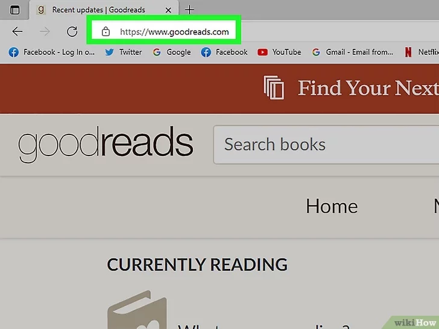
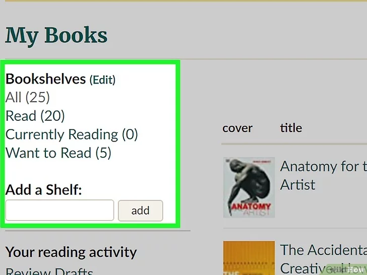

Leer hoe je Goodreads effectief gebruikt op desktop en mobiel
De Goodreads-app heeft beperkingen; gebruik de desktopversie voor meer opties.
Gebruik een browser of download de app voor mobiel.
Email, Facebook, Amazon of Apple. Koppel eventueel je Kindle-apparaat.
Voornaam, achternaam, email en wachtwoord (minimaal 6 tekens).
Voer de code in die per email wordt gestuurd.
Klik op "Create account" of "creer het account".
Goodreads biedt standaard de planken: Gelezen, Bezig met lezen en Wil ik lezen. Je kunt ook zelf planken aanmaken. Exclusive planken tonen alleen boeken die daar zijn toegevoegd, reguliere planken tonen alle boeken.
Gebruik de Recommendations pagina of bekijk "Readers Also Enjoyed" op een boekpagina. Vergelijk boeken met andere leden via hun profiel.
Geef boeken een beoordeling van 1-5 sterren en schrijf je recensie. Goodreads moedigt eerlijke meningen aan zolang deze binnen de richtlijnen vallen.
Log in en klik op My Books in het menu.
Klik Edit om je huidige planken te bekijken en nieuwe toe te voegen.
Kies een actieve groep om andere lezers te ontmoeten en discussies te volgen. Gebruik de zoekfunctie of suggesties.
Zoek lijsten op categorie of populariteit. Je kunt stemmen en bijdragen aan de masterlijst.
Volg auteurs om updates over nieuwe boeken en recensies te krijgen.
Klik op Community > Groups en zoek een groep die je interesseert.
Klik Join Group en kies email-instellingen. Je bent nu lid.
Schrijf je gratis in om boeken te winnen. Kindle Giveaways zijn voor VS-residenten; Print Giveaways ook voor Canada.
Stel een leesdoel voor het jaar en volg je voortgang. Zie ook voortgang van gekoppelde gebruikers.
Goodreads Choice Awards zijn een jaarlijkse prijs door lezers. Stem op de beste boeken van het jaar per genre.